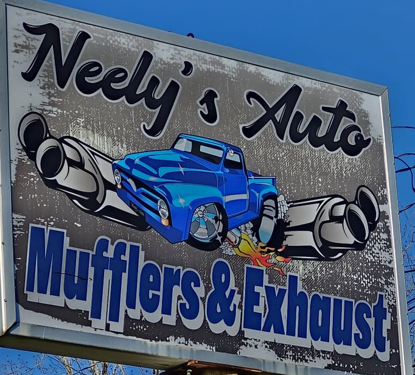

Mufflers & exhaust
Mufflers, pipes and full exhaust overhauls that clear the ground and driveshaft.
Ask about mufflers & exhaust →
Neelys Auto Mufflers and ExhaustJacksonville's exhaust shop on North Bolton Street for mufflers, full exhaust work, catalytic converters and custom tips, done right the first time.
Mufflers, pipes and full exhaust overhauls that clear the ground and driveshaft.
Ask about mufflers & exhaust →Converter installs and stuck O2 sensors removed.
Ask about catalytic converters & sensors →Muffler deletes and exhaust tips for trucks and classics.
Ask about custom sound →After a botched exhaust job elsewhere, they completely overhauled my pipes correctly, with nothing scraping.
Got a muffler delete and exhaust tip on my truck. Super happy with the result and the price.
605 N Bolton St, Jacksonville, TX 75766
Call nowGet directionsEmail neelysexhaust@gmail.comFacebook page| Mon–Sat | 9 AM–5 PM |
|---|---|
| Sunday | Closed |